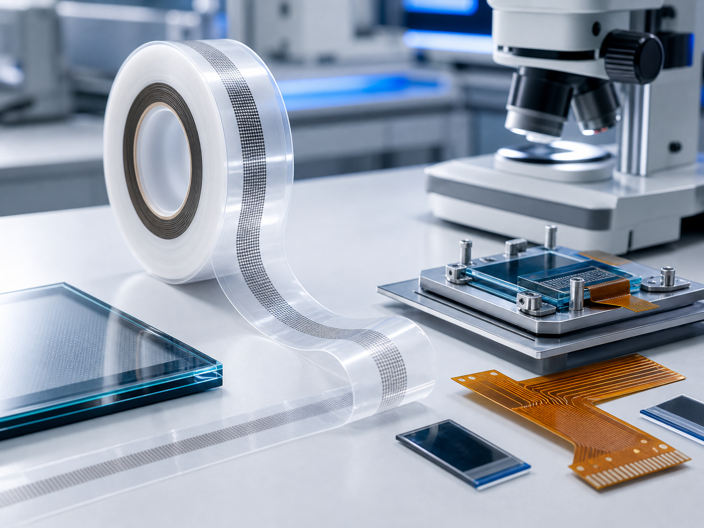

Chip On Glass
CP540 系列、CP692 系列、CP345 系列。适用于驱动 IC 直接邦定在平板显示面板玻璃基板上。
Sony ACF
适用于中小型 FPD、触摸面板、相机模块、COF/OLED 绑定与细间距连接。

CP540 系列、CP692 系列、CP345 系列。适用于驱动 IC 直接邦定在平板显示面板玻璃基板上。
PAF700 系列、CP133 系列；适用于中小型 FPD 与薄膜材料连接，包含粒子排列型 ACF。
CP10000 系列适用于大型 FPD 玻璃基板与 COF 电极连接；CP20000 系列适用于 COF 与输入基板连接。
CP881AM 系列主要用于中型 FOB；CP850CG-35AJ、CP801AM-35AC 适用于刚性基板与薄膜材料连接。
CP806AM-16AC、CP923CM-25AC、CP923AM-18AC、CP920AM、CP920CM、CP9731SB、CP712T、CP1220IS、PAF300C、PAF300B、PAF420B、PAF412、PAF705D、PAF303B。
CP6920F、CP6920F3、CP34531、CP34532、CP34533、CP13941、CP1733B、CP525SA、CP518SC、PAF1000、CP35231-20YA、CP718SA、CP908V3、CP50131-14YA、CP37131-20YB。
Ready to quote
联系 黄工，提供结构、型号、胶宽、卷长和应用场景，我们会尽快协助确认。